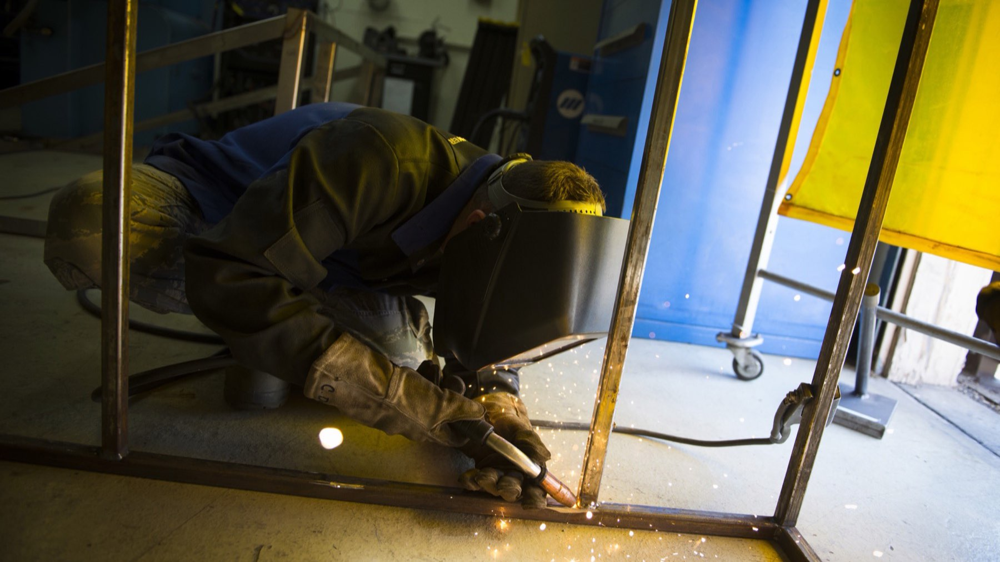

Metalas, kuris laiko liniją
Projektuojame ir gaminame laiptus, turėklus, vartus ir nerūdijančio plieno paviršius. Matuojame vietoje, verdame ceche, montuojame patys.
Paslaugos
Keturi darbai, kuriuos dirbame kasdien.
Kaip dirbame
Keturi žingsniai nuo skambučio iki sumontuoto darbo.
-
Matuojame vietoje
Atvažiuojame, išmatuojame ir pasakome, kas įmanoma toje vietoje, o kas ne. Matavimas nemokamas Vilniuje ir rajone.
-
Brėžinys ir kaina
Per tris darbo dienas gaunate brėžinį ir kainą su nurodytu terminu. Kol nepasirašote, niekas nepradedama.
-
Gaminame ceche
Virinimas, šlifavimas ir dažymas vyksta ceche, ne objekte. Todėl jūsų kieme nelieka dulkių ir kibirkščių.
-
Montuojame patys
Montuoja ta pati brigada, kuri gamino. Po montavimo susitvarkome ir išvežame atliekas.
Už ką atsakome
Keturi dalykai, kurie surašyti sutartyje, ne tik pažadėti telefonu.
-
5 metų garantija
Garantija galioja suvirinimo siūlėms ir dangai. Jei siūlė plyšta arba danga lupasi, taisome savo sąskaita.
-
Civilinės atsakomybės draudimas
Darbai apdrausti. Jei montuodami sugadiname jūsų turtą, nuostolius dengia draudimas, ne jūsų kišenė.
-
Sertifikuoti suvirintojai
Konstrukcijas verda suvirintojai su galiojančiais sertifikatais. Sertifikatų kopijas pateikiame prieš pasirašant.
-
Terminas sutartyje
Pabaigos data įrašoma į sutartį. Vėluojame — mažiname kainą už kiekvieną pavėluotą dieną.
Skaičiai
- 14 metai ceche
- 870 pagamintų darbų
- 5 metų garantija
- 420 m² cecho plotas
Ką sako užsakovai
Laiptus sumontavo per dvi dienas ir po savęs išsivalė. Turėklas nejuda nė per plauką, nors vaikai ant jo kabo kasdien.
Vartai stovi trečius metus, žiemą neužšąla ir automatika neužsiblokavo nė karto. Kaina buvo tiksliai tokia, kokią pasakė iš pradžių.
Kainos
Nuo ko prasideda. Tikslią kainą pasakome po matavimo.
- Turėklai, tiesūs, už bėgantį metrą nuo 90 €
- Laiptai su metaliniu karkasu nuo 1 400 €
- Stumdomi kiemo vartai su automatika nuo 1 900 €
- Nerūdijančio plieno darbastalis, už m² nuo 320 €
Kainos su PVM. Matavimas Vilniuje ir rajone nemokamas. Į kainą įskaičiuotas montavimas ir atliekų išvežimas.
Dažni klausimai
Per kiek laiko pagaminate?
Turėklai ir vartai — dvi tris savaites nuo sutarties. Laiptai ir didesnės konstrukcijos — keturias šešias savaites. Tikslus terminas įrašomas į sutartį.
Ar atvažiuojate matuoti?
Taip. Vilniuje ir Vilniaus rajone matavimas nemokamas. Toliau — pagal atstumą, pasakome iš anksto.
Ar montuojate patys?
Taip. Montuoja ta pati brigada, kuri gamino ceche. Subrangovų nesamdome.
Kokia garantija?
Penkeri metai suvirinimo siūlėms ir dangai. Automatikai galioja gamintojo garantija, dažniausiai dveji metai.
Kokį metalą naudojate?
Konstrukcijoms — juodąjį plieną su milteliniu dažymu. Virtuvėms ir lauko paviršiams — nerūdijantį plieną AISI 304. Prie jūros siūlome AISI 316.
Kaip atsiskaitoma?
Trisdešimt procentų avansas pasirašant, likusi dalis po montavimo. Dirbame su fiziniais ir juridiniais asmenimis, išrašome sąskaitą faktūrą.